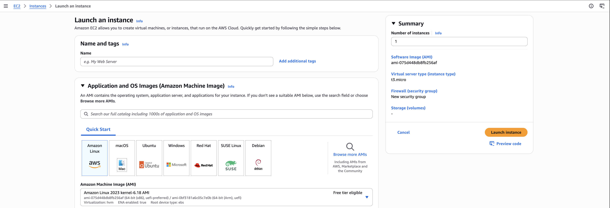
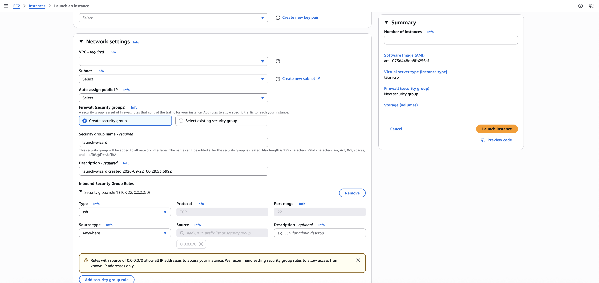

Modal
Development, tests, and coding agents in VM Sandboxes
Chris Levy
Modal is cool
import modal
app = modal.App("basic-function")
@app.function()
def f(x: int, exp: int) -> int:
return x**exp
@app.local_entrypoint()
def main(exp: int = 2):
for res in f.map(range(200), [exp] * 200):
print(res)uv run modal run slides/simple.py
Modal is cool
import modal
app = modal.App("modernbert-classifier")
image = (
modal.Image.debian_slim(python_version="3.12")
.uv_pip_install(
"torch==2.14.0",
"transformers==5.17.0",
"datasets==5.0.1",
"accelerate==1.15.0",
"scikit-learn==1.9.1",
"numpy==2.5.3",
)
.env({"HF_HOME": "/data/huggingface"})
)
vol = modal.Volume.from_name(
VOLUME_NAME, create_if_missing=True
)@app.function(
image=image,
volumes={str(DATA_ROOT): vol},
gpu=GPU,
cpu=CPU,
memory=MEMORY_MB,
timeout=TIMEOUT,
)
def train_model():
... # do training
@app.local_entrypoint()
def main():
train_model.remote()uv run modal run slides/trainer.py
Modal VM Sandboxes
Run a Sandbox on a full virtual machine with a real Linux kernel.
Docker workloads behave as they would on a normal Linux host.
We’ll use this to run our local development environment in the cloud.
What we get to avoid

What we get to avoid

Local development demo
The local loop
./run up- Run the app
./run shell- Open a shell in the app container
./run test- Tests and lint
./run down- Stop the services
./run down --volumes- Stop services and delete volumes
./run wraps Docker Compose.
Modal makes it easy
Local machine
Docker Compose
App + servicesModal VM Sandbox
Docker Compose
App + servicesShell · Tests · Coding agents
./run up remote demo
Remote development demo
The remote loop
./run up remote demo- Run the app in a VM
./run list- List remote environments
./run shell demo- Open a shell in the VM
./run codex demo- Start interactive Codex
./run codex demo --resume- Resume a Codex session
./run agent demo "Add filtering"- Run an agent task in the VM
./run test remote demo- Tests and lint
./run down remote demo- Save changes and stop the VM
demo is the environment name. Each name has its own VM.
Create the VM
sandbox = modal.Sandbox.create(
"bash",
"-c",
BOOT,
app=modal.App.lookup("modal-compose-demo", create_if_missing=True),
image=image,
env={"COMPOSE_PROJECT_NAME": Path(DIRECTORY).name, "APP_PORT": str(PORT)},
experimental_options={"vm_runtime": True},
cpu=2,
memory=4096,
timeout=1800,
encrypted_ports=[PORT],
secrets=[modal.Secret.from_dict({"GH_TOKEN": token})],
readiness_probe=modal.Probe.with_exec("docker", "info", interval_ms=500),
)Build the image
plugin = "/usr/local/lib/docker/cli-plugins/docker-compose"
image = (
modal.Image.debian_slim(python_version="3.12")
.apt_install("docker.io", "curl", "git", "gh", "ca-certificates", "ripgrep")
.run_commands(
"mkdir -p /usr/local/lib/docker/cli-plugins /workspace /artifacts",
f"curl -fsSL https://github.com/docker/compose/releases/download/"
f"{COMPOSE_VERSION}/docker-compose-linux-x86_64 -o {plugin}",
f"echo '{COMPOSE_SHA256} {plugin}' | sha256sum -c -",
f"chmod +x {plugin}",
"docker compose version",
)
.env({"GH_PROMPT_DISABLED": "1", "COMPOSE_PARALLEL_LIMIT": "1"})
.workdir("/workspace")
)Build the image
return image.run_commands(
f"curl -fsSL https://github.com/openai/codex/releases/download/"
f"rust-v{CODEX_VERSION}/codex-package-x86_64-unknown-linux-musl.tar.gz "
"-o /tmp/codex.tar.gz",
f"echo '{CODEX_SHA256} /tmp/codex.tar.gz' | sha256sum -c -",
"tar -xzf /tmp/codex.tar.gz -C /usr/local && rm /tmp/codex.tar.gz",
"codex --version",
)Clone the repo and start the app
# Simplified flow
sandbox.exec("gh", "auth", "setup-git", workdir="/workspace").wait()
sandbox.exec(
"git", "clone", "--", f"https://github.com/{REPO}.git", "/workspace/repo"
).wait()
sandbox.exec(
"bash", "-c",
f"git fetch origin {shlex.quote(REF)} && git checkout --detach FETCH_HEAD",
workdir="/workspace/repo",
).wait()
sandbox.exec(
"bash", "-c", "docker compose up --build --wait --wait-timeout 120",
workdir=f"/workspace/repo/{DIRECTORY}", timeout=900,
).wait()Reuse the Docker build cache
# Pseudocode
if cached and cached["expires_at"] > time.time():
return modal.Image.from_id(cached["image_id"])
# In a fresh VM, after cloning the repo
sandbox.exec(
"bash", "-c", "docker compose pull --ignore-buildable && docker compose build",
workdir=f"/workspace/repo/{DIRECTORY}",
).wait()
# Remove repo + Git credentials; stop Docker and sync
image = sandbox.snapshot_filesystem(timeout=180, ttl=7 * 24 * 3600)
# Save image ID + expiry; stop the preparation VM
return imageRun it in GitHub Actions
on: pull_request
runs-on: ubuntu-latest
timeout-minutes: 20
env:
GH_TOKEN: ${{ github.token }}
MODAL_TOKEN_ID: ${{ secrets.MODAL_TOKEN_ID }}
MODAL_TOKEN_SECRET: ${{ secrets.MODAL_TOKEN_SECRET }}
RUN_REPO: ${{ github.repository }}
RUN_REF: ${{ github.sha }}steps:
- uses: actions/checkout@v6
- uses: astral-sh/setup-uv@v10.1.0
- name: Test in Modal
run: |
./run up remote ci
./run test remote ci
- name: Stop Modal VM
if: always()
run: ./run down remote ciSame workflow.
More places to run it.
Keep your existing Docker Compose setup.
Give each task its own cloud environment.
Let developers and agents use the same app and tests.
Build it for your workflow
Explore the docs: modal.com/docs ↗
Point your agents at modal.com/llms.txt ↗
Use Modal’s primitives to build an environment that fits your situation.
A larger app using gVisor Sandboxes with PostgreSQL, Redis, and OpenSearch Sidecars for a Compose-style stack.